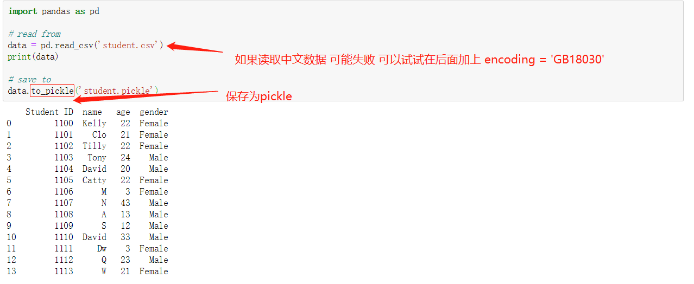
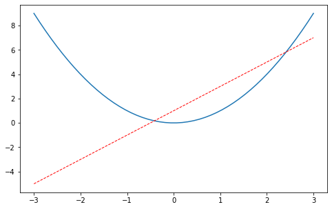
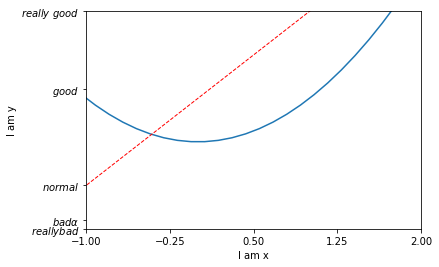

python常用库
pandas
生成数据
（生成的数据data类似于excle 有行标签 index 有列标签 columns ）
1import pandas as pd2import numpy as np3s = pd.Series([1,3,6,np.nan,4,1]) #生成一维数组0 1.0 1 3.0 2 6.0 3 NaN 4 4.0 5 1.0 dtype: float64
xxxxxxxxxx31dates = pd.date_range('20160101', periods=6)#index2df = pd.DataFrame(np.random.randn(6,4), index=dates, columns=['A','B','C','D'])# 生成6*4的数据3print(df)A B C D 2016-01-01 0.766013 0.709325 -0.177668 1.955910 2016-01-02 -0.458004 -1.522308 0.396516 1.358957 2016-01-03 -1.421787 0.978309 0.677042 1.498006 2016-01-04 0.028752 -1.021694 1.245495 -0.316957 2016-01-05 1.972788 -1.803018 -0.110645 -0.635439 2016-01-06 -0.265201 -0.310657 0.262895 1.532657
选择部分数据输出
xxxxxxxxxx11print(df['A'])# 与 df.A 效果相同 按列标签输出2013-01-01 -0.162028 2013-01-02 -0.247155 2013-01-03 -1.544164 2013-01-04 -1.194200 2013-01-05 2.173732 2013-01-06 -0.501831 Freq: D, Name: A, dtype: float64
xxxxxxxxxx11print(df['20130102':'20130104']) # 根据index范围输出 若print(df['A':'C'])则会报错A B C D 2013-01-02 -0.247155 -1.664754 2.044796 -1.647486 2013-01-03 -1.544164 -0.278302 -0.910734 -1.471865 2013-01-04 -1.194200 -1.295544 -0.522822 0.416136
xxxxxxxxxx41# select by label: loc 通过 x y 的label 进行选择输出2print(df.loc['20130102'])3print(df.loc[:,['A','B']])4print(df.loc['20130102', ['A','B']])A -0.247155 B -1.664754 C 2.044796 D -1.647486 Name: 2013-01-02 00:00:00, dtype: float64 A B 2013-01-01 -0.162028 -1.209992 2013-01-02 -0.247155 -1.664754 2013-01-03 -1.544164 -0.278302 2013-01-04 -1.194200 -1.295544 2013-01-05 2.173732 0.422870 2013-01-06 -0.501831 0.392393 A -0.247155 B -1.664754 Name: 2013-01-02 00:00:00, dtype: float64
xxxxxxxxxx51# select by position: iloc 通过位置选择 即通过坐标选择（或范围）2print(df.iloc[3])3print(df.iloc[3, 1])4print(df.iloc[3:5,0:2])5print(df.iloc[[1,2,4],[0,2]])A -1.194200 B -1.295544 C -0.522822 D 0.416136 Name: 2013-01-04 00:00:00, dtype: float64 -1.2955436468567092 A B 2013-01-04 -1.194200 -1.295544 2013-01-05 2.173732 0.422870 A C 2013-01-02 -0.247155 2.044796 2013-01-03 -1.544164 -0.910734 2013-01-05 2.173732 -0.665288
x1# mixed selection: ix 混合选择 即通过label 和坐标 进行选择23print(df.ix[:3, ['A', 'C']])45# Boolean indexing 逻辑选择 可以加入一些逻辑判断进行选择67print(df[df.A > 0])A C 2013-01-01 -0.162028 -1.259382 2013-01-02 -0.247155 2.044796 2013-01-03 -1.544164 -0.910734 A B C D 2013-01-05 2.173732 0.42287 -0.665288 -0.585846
设置value
xxxxxxxxxx71#与上述差不多 还是确定要改变的数据位置即可2df.iloc[2,2] = 1111# 通过坐标位置改变3df.loc['2013-01-03', 'D'] = 2222 #通过标签确定位置 改变4df.A[df.A>0] = 0 #通过逻辑判断筛选改变5df['F'] = np.nan #通过标签改变6df['G'] = pd.Series([1,2,3,4,5,6], index=pd.date_range('20130101', periods=6))# 6667print(df)xxxxxxxxxx71A B C D F G22013-01-01 0.000000 -0.132451 0.021797 -1.656566 NaN 132013-01-02 -0.182227 -0.656873 -0.633688 1.143701 NaN 242013-01-03 0.000000 -0.330042 1111.000000 2222.000000 NaN 352013-01-04 -0.664301 0.248035 -1.286524 0.879787 NaN 462013-01-05 -0.005037 -0.753467 -1.390868 0.842121 NaN 572013-01-06 -0.529367 -1.093037 -0.984761 -1.243129 NaN 6
去除 填充 判断Nan
xxxxxxxxxx71dates = pd.date_range('20130101', periods=6)2df = pd.DataFrame(np.arange(24).reshape((6,4)), index=dates, columns=['A', 'B', 'C', 'D'])3# 先生成几个nan4df.iloc[0,1] = np.nan5df.iloc[1,2] = np.nan6df.iloc[2,:] = np.nan7print(df)xxxxxxxxxx71A B C D22013-01-01 0.0 NaN 2.0 3.032013-01-02 4.0 5.0 NaN 7.042013-01-03 NaN NaN NaN NaN52013-01-04 12.0 13.0 14.0 15.062013-01-05 16.0 17.0 18.0 19.072013-01-06 20.0 21.0 22.0 23.0
xxxxxxxxxx11print(df.dropna(axis=0, how='any')) # how={'any', 'all'} 删除任何有nan的行 （axis=1则为列）xxxxxxxxxx41A B C D22013-01-04 12.0 13.0 14.0 15.032013-01-05 16.0 17.0 18.0 19.042013-01-06 20.0 21.0 22.0 23.0
xxxxxxxxxx11print(df.dropna(axis=0, how='all')) # how={'any', 'all'} 删除全为nan的行 （axis=1则为列）xxxxxxxxxx61A B C D22013-01-01 0.0 NaN 2.0 3.032013-01-02 4.0 5.0 NaN 7.042013-01-04 12.0 13.0 14.0 15.052013-01-05 16.0 17.0 18.0 19.062013-01-06 20.0 21.0 22.0 23.0
xxxxxxxxxx11print(df.fillna(value=0)) #用其它值 填充 nanxxxxxxxxxx71A B C D22013-01-01 0.0 0.0 2.0 3.032013-01-02 4.0 5.0 0.0 7.042013-01-03 0.0 0.0 0.0 0.052013-01-04 12.0 13.0 14.0 15.062013-01-05 16.0 17.0 18.0 19.072013-01-06 20.0 21.0 22.0 23.0
xxxxxxxxxx11print(pd.isnull(df)) #判断是不是nonxxxxxxxxxx71A B C D22013-01-01 False True False False32013-01-02 False False True False42013-01-03 True True True True52013-01-04 False False False False62013-01-05 False False False False72013-01-06 False False False False
合并数据 concat


融合数据 merge
可根据columns列合并和根据index索引合并


绘出数据plot

读取保存数据

小心得
数据 的index可以不写 默认为0 1 2 3....，但是列columns一定要写(写成字典的形式)
numpy
matplotlib
基本操作
xxxxxxxxxx81import matplotlib.pyplot as plt2import numpy as np3#基本用法4x = np.linspace(-5, 5, 50)5y = 2*x + 16# y = x**27plt.plot(x, y)8plt.show()使用figure 自定义窗口以及在一个图上画多条曲线
xxxxxxxxxx141x = np.linspace(-3, 3, 50)2y1 = 2*x + 13y2 = x**24##使用figure 来自定义自己窗口5#第一个figure figure下面的图都在该figure上绘出 直到定义下一个figure6plt.figure()7plt.plot(x, y1)89#第二个figure num是图片的的索引10plt.figure(num=3, figsize=(8, 5),)11plt.plot(x, y2)#第一条曲线1213plt.plot(x, y1, color='red', linewidth=1.0, linestyle='--')#第二条曲线14plt.show()

设置坐标轴
修改坐标轴的label
xxxxxxxxxx231x = np.linspace(-3, 3, 50)2y1 = 2*x + 13y2 = x**245plt.figure()6plt.plot(x, y2)7# plot the second curve in this figure with certain parameters8plt.plot(x, y1, color='red', linewidth=1.0, linestyle='--')9# set x limits 设置x y的范围10plt.xlim((-1, 2))11plt.ylim((-2, 3))12plt.xlabel('I am x')# x y 的label13plt.ylabel('I am y')1415# set new sticks #设置新的刻度16new_ticks = np.linspace(-1, 2, 5)17print(new_ticks)18plt.xticks(new_ticks)19# to use '$ $' for math text and nice looking, e.g. '$\pi$'20# set tick labels 设置新的label $是为了让字体更加美观 |为转义字符 可以将alpha转为数学里面的α21plt.yticks([-2, -1.8, -1, 1.22, 3], 22 [r'$reallybad$', r'$bad\alpha$', r'$normal$', r'$good$', r'$really\ good$'])23plt.show()xxxxxxxxxx11[-1. -0.25 0.5 1.25 2. ]

修改坐标轴的位置
xxxxxxxxxx121x = np.linspace(-3, 3, 50)2y2 = x**23plt.figure(num=3, figsize=(8, 5),)4plt.plot(x, y2)#第一条曲线5plt.plot(x, y1, color='red', linewidth=1.0, linestyle='--')#第二条曲线678# gca = 'get current axis'9ax= plt.gca()10ax.spines['right'].set_color('none')# 将上边和右边的边框去掉11ax.spines['top'].set_color('none')12plt.show()
xxxxxxxxxx231x = np.linspace(-3, 3, 50)2y2 = x**23plt.figure(num=3, figsize=(8, 5),)4plt.plot(x, y2)#第一条曲线5plt.plot(x, y1, color='red', linewidth=1.0, linestyle='--')#第二条曲线678ax= plt.gca()9ax.spines['right'].set_color('none')# 将上边和右边的边框去掉10ax.spines['top'].set_color('none')11ax.xaxis.set_ticks_position('bottom')# 把下边的那条变设置为x_axis12# ACCEPTS: [ 'top' | 'bottom' | 'both' | 'default' | 'none' ]1314ax.spines['bottom'].set_position(('data', 0))# 把bottom边放在y==0的高度15# the 1st is in 'outward' | 'axes' | 'data'16# axes: percentage of y axis17# data: depend on y data1819ax.yaxis.set_ticks_position('left') #把左边的那条边设为 y_axis20# ACCEPTS: [ 'left' | 'right' | 'both' | 'default' | 'none' ]2122ax.spines['left'].set_position(('data',0))# 把left 放在x==0的位置23plt.show()
legend 图例
xxxxxxxxxx401x = np.linspace(-3, 3, 50)2y1 = 2*x + 13y2 = x**245plt.figure()6# set x limits7plt.xlim((-1, 2))8plt.ylim((-2, 3))910# set new sticks11new_sticks = np.linspace(-1, 2, 5)12plt.xticks(new_sticks)13# set tick labels14plt.yticks([-2, -1.8, -1, 1.22, 3],15 [r'$really\ bad$', r'$bad$', r'$normal$', r'$good$', r'$really\ good$'])16# 设置图例17l1, = plt.plot(x, y1, label='linear line')18l2, = plt.plot(x, y2, color='red', linewidth=1.0, linestyle='--', label='square line')19#设置图例的位置20plt.legend(loc='upper right') 21#plt.legend(handles=[l1, l2], labels=['up', 'down'], loc='best')22# the "," is very important in here l1, = plt... and l2, = plt... for this step23"""legend( handles=(line1, line2, line3),24 labels=('label1', 'label2', 'label3'),25 'upper right')26 The *loc* location codes are::2728 'best' : 0, (currently not supported for figure legends)29 'upper right' : 1,30 'upper left' : 2,31 'lower left' : 3,32 'lower right' : 4,33 'right' : 5,34 'center left' : 6,35 'center right' : 7,36 'lower center' : 8,37 'upper center' : 9,38 'center' : 10,"""3940plt.show()添加注解Annotation
xxxxxxxxxx321x = np.linspace(-3, 3, 50)2y = 2*x + 134plt.figure(num=1, figsize=(8, 5),)5plt.plot(x, y,)67ax = plt.gca()8ax.spines['right'].set_color('none')9ax.spines['top'].set_color('none')10ax.spines['top'].set_color('none')11ax.xaxis.set_ticks_position('bottom')12ax.spines['bottom'].set_position(('data', 0))13ax.yaxis.set_ticks_position('left')14ax.spines['left'].set_position(('data', 0))1516x0 = 117y0 = 2*x0 + 118plt.plot([x0, x0,], [0, y0,], 'k--', linewidth=2.5)# 画黑色的虚线 k--表示黑色19plt.scatter([x0, ], [y0, ], s=50, color='b')# 画出该点 b 蓝色2021# method 1:22#####################23plt.annotate(r'$2x+1=%s$' % y0, xy=(x0, y0), xycoords='data', xytext=(+30, -30),24 textcoords='offset points', fontsize=16,25 arrowprops=dict(arrowstyle='->', connectionstyle="arc3,rad=.2"))2627# method 2:28########################29plt.text(-3.7, 3, r'$This\ is\ the\ some\ text. \mu\ \sigma_i\ \alpha_t$',30 fontdict={'size': 16, 'color': 'r'})3132plt.show()tick能见度
xxxxxxxxxx201x = np.linspace(-3, 3, 50)2y = 0.1*x34plt.figure()5plt.plot(x, y, linewidth=10, zorder=1) # set zorder for ordering the plot in plt 2.0.2 or higher6plt.ylim(-2, 2)7ax = plt.gca() #获得当前轴8ax.spines['right'].set_color('none')9ax.spines['top'].set_color('none')10ax.xaxis.set_ticks_position('bottom')11ax.spines['bottom'].set_position(('data', 0))12ax.yaxis.set_ticks_position('left')13ax.spines['left'].set_position(('data', 0))141516for label in ax.get_xticklabels() + ax.get_yticklabels():17 label.set_fontsize(12)18 # set zorder for ordering the plot in plt 2.0.2 or higher19 label.set_bbox(dict(facecolor='white', edgecolor='none', alpha=0.8, zorder=2))20plt.show()
Scatter 散点图
xxxxxxxxxx131n = 1024 # data size2X = np.random.normal(0, 1, n)3Y = np.random.normal(0, 1, n)4T = np.arctan2(Y, X) # for color later on56plt.scatter(X, Y, s=75, c=T, alpha=.5)# s为size c为color alpha 为透明度78plt.xlim(-1.5, 1.5)9plt.xticks(()) # ignore xticks10plt.ylim(-1.5, 1.5)11plt.yticks(()) # ignore yticks 隐藏所有的ticks1213plt.show()Bar 柱状图
xxxxxxxxxx241n = 122X = np.arange(n)#生成从0-n 12个整数3Y1 = (1 - X / float(n)) * np.random.uniform(0.5, 1.0, n)#产生n个0.5-1的数4Y2 = (1 - X / float(n)) * np.random.uniform(0.5, 1.0, n)56plt.bar(X, +Y1, facecolor='#9999ff', edgecolor='white')7plt.bar(X, -Y2, facecolor='#ff9999', edgecolor='white')89for x, y in zip(X, Y1):10 # ha: horizontal alignment11 # va: vertical alignment12 plt.text(x + 0.1, y + 0.05, '%.2f' % y, ha='center', va='bottom')1314for x, y in zip(X, Y2):15 # ha: horizontal alignment16 # va: vertical alignment17 plt.text(x + 0.4, -y - 0.05, '%.2f' % y, ha='center', va='top')1819plt.xlim(-.5, n)20plt.xticks(())21plt.ylim(-1.25, 1.25)22plt.yticks(())2324plt.show()
Contours 等高线图
xxxxxxxxxx211def f(x,y):2 # the height function3 return (1 - x / 2 + x**5 + y**3) * np.exp(-x**2 -y**2)45n = 2566x = np.linspace(-3, 3, n)7y = np.linspace(-3, 3, n)8X,Y = np.meshgrid(x, y)#网格图910# 1. use plt.contourf to filling contours 填充11# X, Y and value for (X,Y) point12plt.contourf(X, Y, f(X, Y), 8, alpha=.75, cmap=plt.cm.hot)# 类型 冷热图1314# 2. use plt.contour to add contour lines 画线15C = plt.contour(X, Y, f(X, Y), 8, colors='black')#8 代表等高线条数 即等高线的稀疏16# 3. adding label17plt.clabel(C, inline=True, fontsize=10)# inline 为Flase时 label将被线挡住1819plt.xticks(())20plt.yticks(())21plt.show()
image 图片
xxxxxxxxxx171# image data2a = np.array([0.313660827978, 0.365348418405, 0.423733120134,3 0.365348418405, 0.439599930621, 0.525083754405,4 0.423733120134, 0.525083754405, 0.651536351379]).reshape(3,3)56"""7for the value of "interpolation", check this:8http://matplotlib.org/examples/images_contours_and_fields/interpolation_methods.html9for the value of "origin"= ['upper', 'lower'], check this:10http://matplotlib.org/examples/pylab_examples/image_origin.html11"""12plt.imshow(a, interpolation='nearest', cmap='bone', origin='lower')#13plt.colorbar(shrink=.92)# 压缩为92%1415plt.xticks(())# 隐藏 ticks 16plt.yticks(())17plt.show()
3D数据
xxxxxxxxxx471from mpl_toolkits.mplot3d import Axes3D23fig = plt.figure()# 建一个图片的窗口4ax = Axes3D(fig)# 给窗口添加3D维度5# X, Y value6X = np.arange(-4, 4, 0.25)7Y = np.arange(-4, 4, 0.25)8X, Y = np.meshgrid(X, Y)# 作为网格 9R = np.sqrt(X ** 2 + Y ** 2)10# height value11Z = np.sin(R)1213ax.plot_surface(X, Y, Z, rstride=1, cstride=1, cmap=plt.get_cmap('rainbow'))# 1 1分别为行跨 列跨14"""15============= ================================================16 Argument Description17 ============= ================================================18 *X*, *Y*, *Z* Data values as 2D arrays19 *rstride* Array row stride (step size), defaults to 10 20 *cstride* Array column stride (step size), defaults to 1021 *color* Color of the surface patches22 *cmap* A colormap for the surface patches.23 *facecolors* Face colors for the individual patches24 *norm* An instance of Normalize to map values to colors25 *vmin* Minimum value to map26 *vmax* Maximum value to map27 *shade* Whether to shade the facecolors28 ============= ================================================29"""3031# I think this is different from plt12_contours32ax.contourf(X, Y, Z, zdir='z', offset=-2, cmap=plt.get_cmap('rainbow'))33"""34========== ================================================35 Argument Description36 ========== ================================================37 *X*, *Y*, Data values as numpy.arrays38 *Z*39 *zdir* The direction to use: x, y or z (default)40 *offset* If specified plot a projection of the filled contour41 on this position in plane normal to zdir42 ========== ================================================43"""4445ax.set_zlim(-2, 2)4647plt.show()subplot 多合一显示
基本方法
xxxxxxxxxx171# example 1:2###############################3plt.figure(figsize=(6, 4))4# plt.subplot(n_rows, n_cols, plot_num)5plt.subplot(2, 2, 1) #两行两列 第一张图6plt.plot([0, 1], [0, 1])78plt.subplot(222)#也可将逗号省掉 两行两列 第二张图9plt.plot([0, 1], [0, 2])1011plt.subplot(223)#两行两列 第三张图12plt.plot([0, 1], [0, 3])1314plt.subplot(224)#两行两列 第四张图15plt.plot([0, 1], [0, 4])1617plt.tight_layout()
xxxxxxxxxx231# example 2:2###############################3plt.figure(figsize=(6, 4))4# plt.subplot(n_rows, n_cols, plot_num)5plt.subplot(2, 1, 1)6# figure splits into 2 rows, 1 col, plot to the 1st sub-fig7plt.plot([0, 1], [0, 1])89plt.subplot(234)10# figure splits into 2 rows, 3 col, plot to the 4th sub-fig11plt.plot([0, 1], [0, 2])1213plt.subplot(235)14# figure splits into 2 rows, 3 col, plot to the 5th sub-fig15plt.plot([0, 1], [0, 3])1617plt.subplot(236)18# figure splits into 2 rows, 3 col, plot to the 6th sub-fig19plt.plot([0, 1], [0, 4])202122plt.tight_layout()23plt.show()其他方法
xxxxxxxxxx201import matplotlib.pyplot as plt2import matplotlib.gridspec as gridspec34# method 1: subplot2grid5##########################6plt.figure()7# stands for axes 三行三列 第一图从（0,0）开始 跨度为3（默认为1）8ax1 = plt.subplot2grid((3, 3), (0, 0), colspan=3) 9ax1.plot([1, 2], [1, 2])10ax1.set_title('ax1_title')# 设置title 的label11ax2 = plt.subplot2grid((3, 3), (1, 0), colspan=2)# 从（1,0）开始 列跨度为212ax3 = plt.subplot2grid((3, 3), (1, 2), rowspan=2)#从（1,2）开始 行跨度为213ax4 = plt.subplot2grid((3, 3), (2, 0))# 不写跨度 默认 1 114ax4.scatter([1, 2], [2, 2])15ax4.set_xlabel('ax4_x')16ax4.set_ylabel('ax4_y')17ax5 = plt.subplot2grid((3, 3), (2, 1))181920
xxxxxxxxxx121# method 2: gridspec2#########################3plt.figure()4gs = gridspec.GridSpec(3, 3)5# use index from 06ax6 = plt.subplot(gs[0, :])7ax7 = plt.subplot(gs[1, :2])8ax8 = plt.subplot(gs[1:, 2])9ax9 = plt.subplot(gs[-1, 0])10ax10 = plt.subplot(gs[-1, -2])1112
xxxxxxxxxx71# method 3: easy to define structure2####################################3f, ((ax11, ax12), (ax13, ax14)) = plt.subplots(2, 2, sharex=True, sharey=True)4ax11.scatter([1,2], [1,2])56plt.tight_layout()7plt.show()
图中图
xxxxxxxxxx281fig = plt.figure()2x = [1, 2, 3, 4, 5, 6, 7]3y = [1, 3, 4, 2, 5, 8, 6]45# below are all percentage6left, bottom, width, height = 0.1, 0.1, 0.8, 0.8# 小图相对于figure 的位置大小 （百分比）7ax1 = fig.add_axes([left, bottom, width, height]) # main axes 第一个图8ax1.plot(x, y, 'r')9ax1.set_xlabel('x')10ax1.set_ylabel('y')11ax1.set_title('title')1213ax2 = fig.add_axes([0.2, 0.6, 0.25, 0.25]) # inside axes 第二个小图14ax2.plot(y, x, 'b')15ax2.set_xlabel('x')16ax2.set_ylabel('y')17ax2.set_title('title inside 1')181920# different method to add axes21####################################22plt.axes([0.6, 0.2, 0.25, 0.25])23plt.plot(y[::-1], x, 'g')24plt.xlabel('x')25plt.ylabel('y')26plt.title('title inside 2')2728plt.show()次坐标轴
xxxxxxxxxx161x = np.arange(0, 10, 0.1)2y1 = 0.05 * x**23y2 = -1 *y145fig, ax1 = plt.subplots()67ax2 = ax1.twinx() # mirror the ax1 把ax1 的数据镜像8ax1.plot(x, y1, 'g-')9ax2.plot(x, y2, 'b-')1011ax1.set_xlabel('X data')12ax1.set_ylabel('Y1 data', color='g')13ax2.set_ylabel('Y2 data', color='b')1415plt.show()16动画
xxxxxxxxxx321from matplotlib import animation23fig, ax = plt.subplots()45x = np.arange(0, 2*np.pi, 0.01)6line, = ax.plot(x, np.sin(x))789def animate(i):10 line.set_ydata(np.sin(x + i/10.0)) # update the data11 return line,121314# Init only required for blitting to give a clean slate.15def init():16 line.set_ydata(np.sin(x))17 return line,1819# call the animator. blit=True means only re-draw the parts that have changed.20# blit=True dose not work on Mac, set blit=False21# interval= update frequency22ani = animation.FuncAnimation(fig=fig, func=animate, frames=100, init_func=init,23 interval=20, blit=False)2425# save the animation as an mp4. This requires ffmpeg or mencoder to be26# installed. The extra_args ensure that the x264 codec is used, so that27# the video can be embedded in html5. You may need to adjust this for28# your system: for more information, see29# http://matplotlib.sourceforge.net/api/animation_api.html30# anim.save('basic_animation.mp4', fps=30, extra_args=['-vcodec', 'libx264'])3132plt.show()